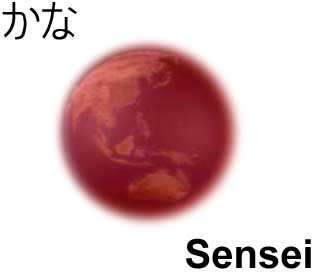

The applet should start automatically if your browser is java-enabled. For more informations, support, bugs, etc., consult the project page. To browse source code, you can access SVN Repository
|  |
||
|
| ||
|
The applet should start automatically if your browser is java-enabled. For more informations, support, bugs, etc., consult the project page. To browse source code, you can access SVN Repository | ||